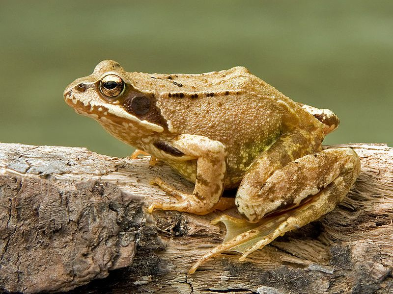

Grasfrosch
Rana temporaria
Die Erwachsenen Tiere dieser „Braunfrösche“ sind nur während des Winters und im Frühling am Wasser anzutreffen. Jedes Weibchen legt bereits, im März in quallenförmigen Laichballen 3-4000 Eier ab. Eier, Kaulquappen und Jungfrösche fallen einer großen Zahl von Freßfeinden zum Opfer, so dass nur etwa 4 Tiere erwachsen werden. Als Landfrösche erbeuten sie vornehmlich Insekten und Schnecken, weshalb Insektizide und Schneckenkörner auch den Grasfröschen schaden. Die Froschschenkel waren früher bei uns als Delikatesse begehrt.